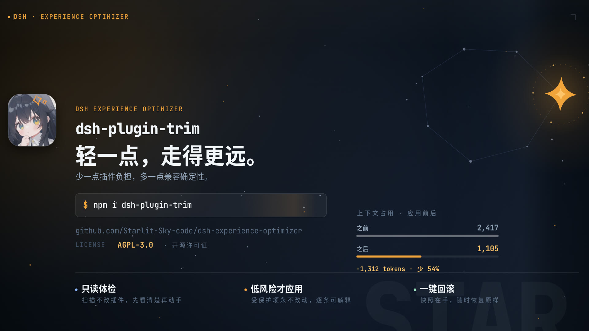

任务相关
描述匹配，只算相关
关键词命中不单独构成“用不上”。
DSH · CONTEXT OBSERVATORY
DSH 体验优化器把插件常驻成本、兼容性检查和减负方案放进一个可观察的界面。少一点插件负担，多一点兼容确定性。
npm i dsh-plugin-trim
省略版本号即最新版 · 两个插件可独立或同时使用
不是工具白名单，是插件常驻上下文。
向下看
工具调用看得见，插件的提示词和工具描述却一直在后台占位。先量出来，再决定关掉什么。
示例 profile 的常驻上下文降幅
示例数据，不是你的 profile。
−1,312 tokens · 少 54%
02 / EVIDENCE CHAIN
描述匹配只说明“可能相关”。强证据要同时穿过任务、账本、周期和成本四道门。
任务相关
关键词命中不单独构成“用不上”。
使用账本
历史或本会话调用过，就不自动建议关闭。
定时 / 触发
schedule、cron、提醒、dream 等语义硬保护。
上下文成本
没有可归属成本的插件，进入复核而不是候选。
RESULT
即使成为候选，也仍然需要确认与 host 审批 allowed-once。
ALLOWED · ONCEdsh-plugin-trim
扫描上下文占比与兼容性，生成可解释的保留/启用/关闭方案；低风险项经确认与安全审批后应用。
dsh-plugin-recipe
把业务目标翻译成可校验、可导出的工作流蓝图，每一步都标注审批级别。

04 / SAFETY IS A VERB
只读分析、低风险、安全确认、还原点。没有任何一步靠“相信模型”。
省略版本号即 latest。两个包都可以单独安装。
可选工作流配方：npm i dsh-plugin-recipe
默认保守：没有使用账本、任务置信度不够、带定时/触发语义，或已有调用记录时，只进入复核。
带“每月/每周/定时/提醒/日程/dream”等语义的插件会被硬保护；也可以加入 protect 列表。
每次应用前写入还原点。在界面点击“恢复最近”，或调用 trim_rollback_profile；恢复同样需要安全确认。
confirm: true 只是提案标记。宿主审批返回 allowed-once 才是授权；拒绝、取消或审批不可用时一律不写入。
AGPL-3.0 · 作者 Starlit Sky · 欢迎反馈、试用和一起把插件生态做轻。
QQ 群：1134419871
捐赠方式：待补充。当前也可以通过反馈、文档和插件试用来支持。
AGPL-3.0-only · Copyright © 2026 Starlit Sky